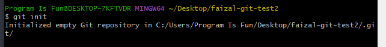
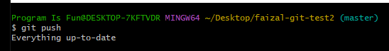
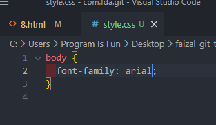

Git Remote
Ilustrasi

buat repo baru
- tekan tanda tambah
- ketik nama dan descripsi
- klik public da readme
- kita copy alamat HTTPS
- buka git bash di desktop
- kemudian kita clone
- kita ketik git remote akan muncul origin
- nah ini secara default remote itu harus punya nama
- nah ketika kita cloning dari github itu otomatis nama default nya origin
- kalo kita tulis git remote -v
- -v : verbose : melihat data lebih detail
git status
- jadi katanya : branch yang kita punya itu sudah dama dengan branch yang ada diorigin kita yang namanya master
Graph
- kita tambahkan file baru
- ketik git status
- artinya : branch yang kita punya itu mendahului origin dengan 1 commit
- kalo kita graph
Push
git config --list
kalo baru punya dilocal digithub belum ada
- buat folder baru
- kita git init
- buat file baru
- kita add dan commit
- kita graph

kita simpan ke dalam github
- kita buat repo baru
- kita tambah remote baru
- kita git push
- menambahkan fille css
- tambahkan di github file baru css juga tapi beda isi
- yang dilocal kita juga add
- ketika kita push ada pesan error / gagal
- katanya : push kalian ditolak
- karena kemungkinan diremote nya ada perubahan
- katanya : solusi nya git pull
- kita ketik git fetch
- dia akan mengeek repo yang ada diremote sudah sampai mana beda tidak sama yang kita punya.
- kita git status
- tulisannya : jadi 22nya bikin cabang berbeda
- kalo tulis graph
- kita membuat cabang local dan remote bikin branch baru
- solusi : kita merge dulu, kita bisa git pull
- kita merge confilt
- kita atur confilt nya dulu
- kalo sudah diresolve
- coba kita cek status
- kita disuruh add baru commit
- kita cek status dan kemudian kita git push
- kita graph

digithub sudah ada, dilocal sudah ada, dilocal diubah dan digithub juga diubah
